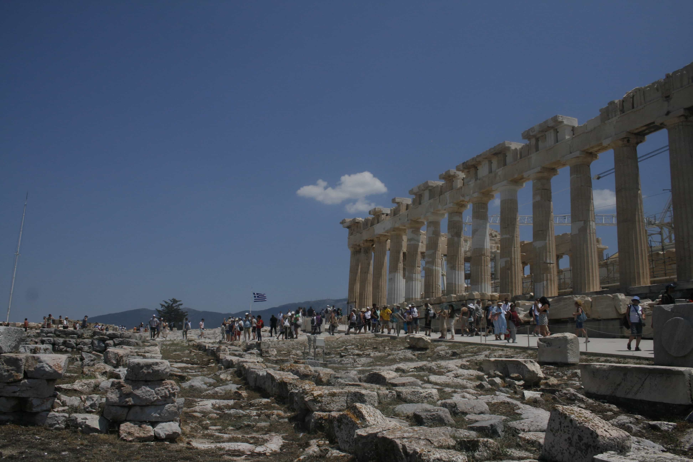

Explore Greece
Joey Harris graduated last spring from Wooster College in Ohio. I spoke with him about his post-graduation backpacking trip with his friends, which kicked off in Greece. Joey had great insights about cultural differences and fun activities in Greece.
Can you share the backstory of your trip to Greece and the rest of Europe? Absolutely! I had been planning this European adventure for a while. I was set to spend about three weeks there, so I packed as many clothes as I could into my bags, thinking I wouldn't have many chances to do laundry. Little did I know, there were plenty of places to wash clothes. I met up with my friends, who are twins, in Greece. Their family was there for a week, renewing their vows, and then we set off for a backpacking journey across Europe. Tell us about your time in Greece. Any standout experiences or places you visited? Greece was incredible. We started in Loutraki, a beautiful beach town, and we spent a lot of time in the sun. We explored Athens and Corinth, tried a ton of Greek food (Tzatziki was a standout), and marveled at the beaches. Greece really set the tone for our adventure. Can you share any memorable or funny moments from your time in Greece? Oh, there were so many funny moments! One that sticks out is me constantly saying, "Who knew Greek life was so big out here?" I found it hilarious, and my friends got a kick out of it, too. What were some cultural surprises or differences you encountered, especially related to food and daily life? Two things that stood out were the cost of using bathrooms and the absence of American-style coffee. Any travel tips for someone planning a similar journey? Turn off your phone, bring a digital camera and embrace the limited cell service. Immersing yourself fully is one of the best things about the experience. And cliché as it may sound, make the most of every moment. It’s truly an awesome experience. What was the most unforgettable part of your trip? Seeing iconic sites that I'd only heard of or seen in pictures was surreal. The only downside was saying goodbye to my friends as we went our separate ways for the last few days. Would you go back to Greece? Definitely! And there are also so many other cities and countries I want to explore.Recommendations
Public transportation
- You can use the metro, bus, tram, train, ferry or taxi to get around the country. The metro is available in Athens and Thessaloniki,and connects to the airport and the port. The bus network is extensive and covers both urban and rural areas. The tram operates in Athens and Piraeus and runs along the coast. The train service is limited but connects some major cities. The ferry service is the best way to travel between the islands. The taxi service is relatively cheap and easy to find.
Hostels
- Athens Backpackers: A modern and social hostel in the heart of Athens, near the Acropolis. It offers free breakfast, free walking tours, free Wi-Fi, free lockers, free towels and free linens. It also has a rooftop bar with stunning views of the city.
- Caveland Santorini: A unique and cozy hostel in a former winery, located in the village of Karterados on Santorini island. It offers free breakfast, free yoga classes, free Wi-Fi, free lockers, free towels and free linens. It also has a swimming pool, a garden and a cave lounge.
- Stay Hostel Rhodes: A stylish and spacious hostel in the medieval town of Rhodes, near the beach. It offers free breakfast, free walking tours, free movie nights, free Wi-Fi, free lockers, free towels and free linens. It also has a bar, a cafe, a cinema room and a game room.
Restaurants
- Funky Gourmet: A two Michelin-starred restaurant in Athens that serves creative and innovative Greek cuisine. It offers a tasting menu that changes seasonally and showcases local ingredients and flavors. It is located in a neoclassical house and has elegant decor.
- A fine dining restaurant in Santorini that serves traditional and contemporary Greek cuisine with an emphasis on local products and recipes. It offers a variety of dishes such as lamb shank with fava beans, sea bass with tomato sauce and baklava with ice cream. It is located in Pyrgos village and has a stunning view of the island
- To Ouzeri: A casual and cozy restaurant in Rhodes that serves authentic Greek cuisine. It offers a variety of dishes such as grilled octopus, fried calamari, stuffed vine leaves and tzatziki. It is located in the old town and has a friendly and relaxed atmosphere.
Nightlife
- The party island with numerous famous bars and clubs where you can dance the night away. You can also enjoy the stunning views of the coastline and the villages from the beach bars and terraces. Some of the most popular places are Paradise Beach Club, Cavo Paradiso, and Scorpios.
- PK Cocktail Bar: A Santorini bar with great cocktails, superb sunset views and three levels of seating on the edge of the caldera. It is located in the center of Fira and is an excellent spot for both locals and visitors.
- The Clumsies: An award-winning all day bar in Athens with a refined lounge and a romantic vibe. It is run by two world-class Greek bartenders who create spectacular cocktails, such as the Chilli Con Melon, made with premium tequila, mezcal, melon, sage and a smoked chipotle.
Excursions
- Acropolis Museum: A modern building that displays the artifacts and sculptures that were found on the Acropolis hill. You can see the original Parthenon frieze, the Caryatids, and other masterpieces of ancient Greek art.
- An ancient and sacred site that was considered the center of the world by the Greeks. It is known for its oracle, where people would seek advice from the god Apollo.
- Red Beach: One of the most amazing places to visit in Santorini is the Red Beach, a unique and stunning beach that is famous for its red and black volcanic rocks and sand. The Red Beach is located near the ancient site of Akrotiri, where you can explore the ruins of a Minoan town that was buried by a volcanic eruption. To reach the beach, you can either take a short hike from the parking lot or take a boat from Akrotiri port.
Safety
- Be aware of pickpockets, especially in crowded areas such as Athens, Thessaloniki and tourist attractions. Keep your valuables close to you and do not leave them unattended.
- Avoid walking alone at night in dark or isolated streets. Use public transportation or taxis instead.
- Beware of scams, such as people offering you fake products, services or tickets. Do not accept anything from strangers or pay in advance without a receipt.